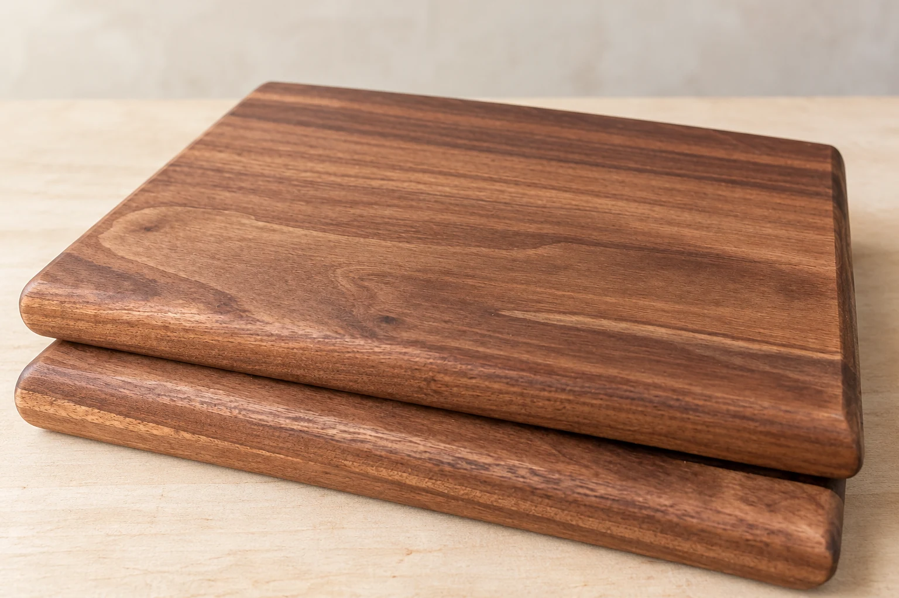
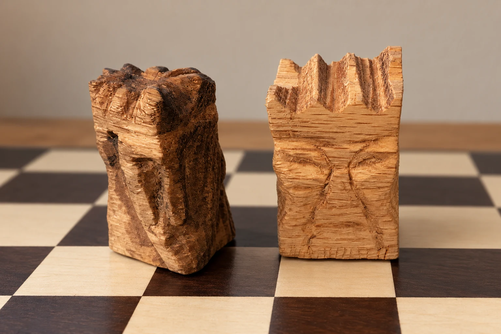

Walnut boards made by Paul. Photo edited for presentation.Make your own cutting board
Use a miter saw, thickness planer, table saw and sandpaper to make a composite hardwood cutting board.
What you’ll learn
- Choose stock and sketch a board with useful dimensions.
- Measure and lay out your work; follow a sequence for cutting, surfacing and shaping.
- Sand, ease the edges, and choose an appropriate finish and care routine.
Project: a composite hardwood cutting board, with Paul’s walnut boards as examples.
Adults-only beginner project. Tool use and machine operations are assigned by the instructor; some steps may be instructor demonstrations.
$20 per participant
Entirely for materials · Up to 10 participants per class.
Friday, November 6, 2026 · 7–9 p.m. Central
Adults only · Two-hour class.
Pickup: Saturday, November 7; pickup time to be arranged.
Brain Gym garage
1117 S East Ave, Oak Park, IL 60304
Reservations opening soon. Online checkout is being tested; real bookings are not open yet.
See the woodworking pathway →

Chess kings carved by Paul. Photo edited for presentation.Small woodcarving 101
Use carver’s knives and gouges to carve a small figurine from basswood.
What you’ll learn
- Choose a suitable blank and sketch a simple design.
- Learn safe hand positions, work holding, tool handling and basic carving cuts.
- Refine the shape and decide which surfaces to smooth and which tool marks to keep.
Project: a small basswood figurine. Paul’s chess kings are examples of what you can make.
Adults-only beginner introduction. The instructor will guide tool choice, work holding and safe technique; carving uses sharp tools.
$1 per participant
Materials provided · Up to 10 participants per class.
Monday, November 2, 2026 · 7–9 p.m. Central
Adults only · Two-hour class.
Brain Gym garage
1117 S East Ave, Oak Park, IL 60304
Reservations opening soon. Online checkout is being tested; real bookings are not open yet.
See the hand-tool foundations →